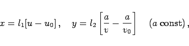
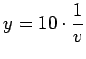

Inhalt Index DeskTop Bronstein

 Funktionen und ihre Darstellung Skalen und Funktionspapiere Funktionspapiere
Funktionen und ihre Darstellung Skalen und Funktionspapiere Funktionspapiere


Die Unterteilung der zu skalierenden Koordinatenachse erfolgt mit Hilfe der Gleichung (2.45) für die Funktion Umgekehrte Proportionalität.
Skalengleichung: Es gilt
|  | (2.264) |
wobei l1 und l2 Maßstabsfaktoren sind und u0 und v0 Anfangspunkte.
| Beispiel Konzentration in einer chemische Reaktion | ||||||||||
|
Es wird angenommen, daß eine Reaktion 2. Ordnung vorliegt, d.h., es soll der Zusammenhang gelten. Geht man zum Kehrwert dieser Gleichung über, dann erhält man d.h., der Zusammenhang (2.265) wird durch eine Gerade beschrieben, wenn in dem zugehörigen Funktionspapier die y-Achse reziprok und die x-Achse linear unterteilt ist. Die Skalengleichung für die y-Achse lautet z.B.:  cm. Darüber hinaus kann man mit Hilfe zweier Punkte der Geraden, z.B. liest man P1(10,10) und P2(30,5) ab, Näherungswerte für die beiden Parameter k (Reaktionsgeschwindigkeits-Konstante) und c0 (Anfangskonzentration) ermitteln: |